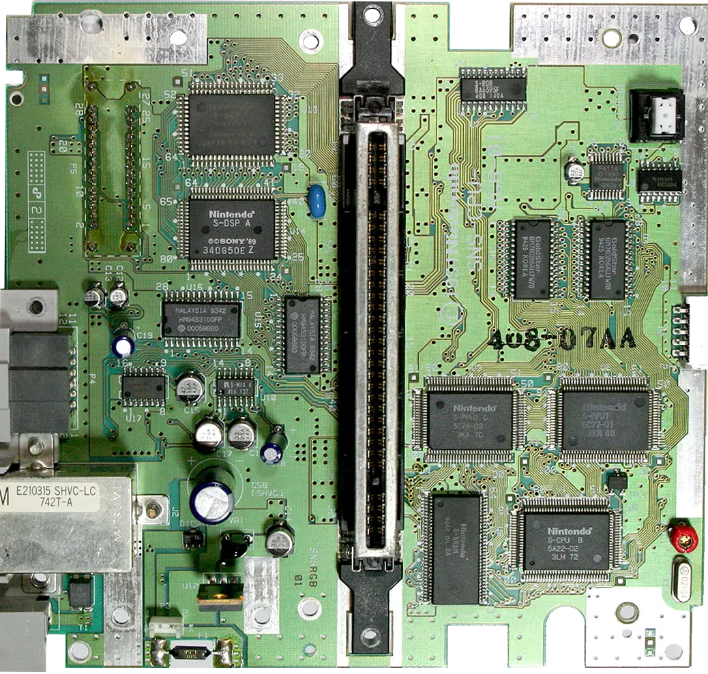
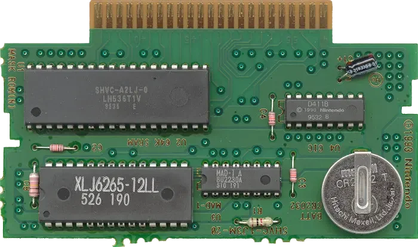
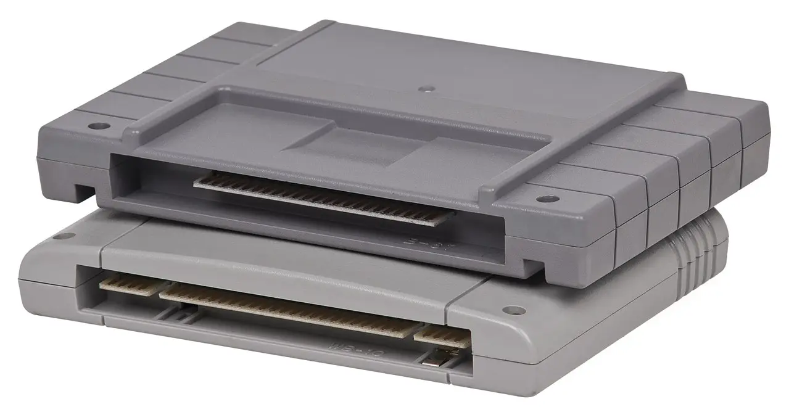

I am a big fan of Street Fighter 2. Certainly not the greatest but likely among the nerdiest since I wrote an entire book about its platform[1]. It won't be a surprise to learn that, back in December 1992, I was eagerly waiting for the Super Nintendo port so I could stop sinking my rare 10 Francs coins into the arcades.
USA readers may wonder why I was waiting for the release of a game already published. While Street Fighter II made it to the Super Famicom on June 10, 1992 in Japan and July 15, 1992 in North America, France had to wait until December 17, 1992 to get a PAL version.
As I waited, I saw ads[2] in French magazines[3] offering imported cartridges of my Holy Graal. To make them work on a European Super Nintendo, one had to buy an adapter. The combo cost almost as much as the console (595F + 199F vs 1290F).
Needless to say I couldn't afford it. But I always wondered how Nintendo seemingly controlled the regions and how tinkerers had managed to circumvent that protection.
Nintendo's region and licensing system is named 10NES. At its heart is the chip known as "CIC" (Checking Integrated Circuit). On the following Super Nintendo motherboard it is recognizable via its F411A[4] label.
 Source. Click the image to find the CIC chip.The CIC chip features 16 pins but not all of them are used. The pinout, published on nesdev.org[5][6], allows us a glimpse into how it CIC works.
-----_----
Data Out <--|01 16|--- VCC +5V
Data In -->|02 15|
Seed -->|03 14|
Config -->|04 13|
|05 12|
CLK -->|06 11|
RST -->|07 10|--> Slave CIC RST
GND ---|08 09|--> Host RST
----------
In the set of pins, we find standard ones such as power (+5V), a ground (GRD), a Clock (CLK) to breathe life into the silicone, and a Reset (RST).
To understand the other pins, we need to introduce the second part of the 10NES system, an identical CIC chip located on the game cartridge. In the following cart (used among other titles for Secret Of Mana), the CIC is on the right, labeled D411B.
 Source. Click the image to see the back of the cart.Trivia: A deeply satisfying exercise with hardware from the 90s is to follow the bus lines. Try to follow the +5V (VCC) cart pin and see how it makes its way to pin 16 (+5V (VCC)) on the CIC (hint: It goes through a resistor and a capacitor).
The two CICs in the 10NES system are identical. Pin 04 (CONF) configures how a chip should behave. Grounding it makes it behave like a Key but connecting it to power makes it behave like a Lock. On every system it was used, the Lock is in the console and the Key is in the game cartridge.
The two I/O pins, 01 (OUT) and 02 (IN), are paired to each other so the chips can communicate. Since both CIC use the same CLK, they execute instructions in lockstep and are synchronized.

Both the Lock and the Key generate a signal on their OUT pin and compare it to what is received on their IN pin. If it detects a discrepancy, the Lock asserts its HST RST (HoST ReSeT) pin which triggers a RST on the graphic chip PPU2. This signal is distributed to all other components of the machine (CPU, PPU1, APU, DSP) every 1s making the overall system unusable.
The Lock's RST pin is directly connected to the console RESET button. When this pin is asserted, it automatically asserts KEY RST (pin 07) which is connected to the RST pin of the Key CIC on the cartridge.
To generate a pseudo random signal, the Lock needs a seed value. It is generated thanks to a capacitor connected to its SEED pin[7]. The randomness comes from how long it takes for the capacitor to discharge. After it gets its seed value, the Lock sends it to the Key as part of the prologue (therefore the Key SEED pin is unused and grounded). After that both the Key and the Lock start issuing one of the 16 possible streams[8].
On top of using the same CLK signal, both chips stay in sync via careful programming. They don't always take the same code path but developers made sure instructions of each branch take the same number of cycles[9].
How the CIC internals were uncovered is a fascinating story which started in 2006 on forums.nesdev.org[10]. In short, researchers gave up on the official Nintendo CIC to instead study Tengen's copy called "Rabbit". They discovered a debug function prompting the mammal to output its ROM on its pins. What we learn from this thread is that the CIC is a 4-bit SM590 microcontroller made by Sharp[11]. It contains the following registers, RAM, and ROM.
+-+ +-------+ +-------+-------+-------+-------+
|C| | A | | | | | |
+-+ +-+-+-+-+ +- - - - - - - - - - - - - - - -+
| X | | | | | |
+---+-+-+-+-+ +- - - - - - - - - - - - - - - -+
| P | | | | | |
| PH| PL | +- - - - - - - - - - - - - - - -+
+-------+-+-+-+-+-+-+ | | | | |
| IC | +- - - - - - - -R- - - - - - - -+
+-+-+-+-+-+-+-+-+-+-+ | | | | |
| | +- - - - - - - - - - - - - - - -+
+- - - - - - - - - -+ | | | | |
| | +- - - - - - - - - - - - - - - -+
+- - - - -S- - - - -+ | | | | |
| | +- - - - - - - - - - - - - - - -+
+- - - - - - - - - -+ | | | | |
| | +- - - - - - - - - - - - - - - -+
+-+-+-+-+-+-+-+-+-+-+
A = 4-bit Accumulator R = 32 nibbles of RAM
C = Carry flag
X = 4-bit General register
P = Pointer for memory access
PH = Upper 2-bits of P
PL = Lower 4-bits of P, for I/O
IC = Instruction counter
S = Stack for the IC register
There are also 512 bytes of ROM (768 for the 3195A, PAL version), where the instructions are stored[12].
Trivia: The story of how the SNES CIC was understood is equally interesting[13].
With all this knowledge, we can understand how Region lock worked. Nintendo simply used a different CIC ROM for their NA console and the European cartridge games. Different programs generated different signals which made the Lock CIC HST RST loop trigger.
How did people circumvent that region lock then? One solution was to pry open a Super Nintendo and operate on the Lock CIC. Since the lethal trigger was the HST RST pin, a solution was to severe it and disconnect it from the motherboard. That would have worked but that would have also disabled the RESET button of the machine.
A better solution was to cut the CONF pin[14]. This made the Lock CIC behave like a Key CIC which never pulled the HST RST trigger.
Modding a console was too much to ask from most customers. Not only gamers didn't have the skills, such modification voided the warranty.
Instead adapters, called "Game Converter" started to appear. The device would connect in the cartridge slot of the console and allow two cartridges to be inserted on its top. In the front row the player placed the import game they wanted to play. In the back row, they plugged a cart belonging to same region as the console (e.g. Super Mario World).
The converter worked by discarding the import game four CIC lines. Instead it rerouted the local game cart CIC pins to the console. The result was a Lock CIC chatting with a Key CIC of a local game but the console running the import game.
To make Japan cartridges incompatible with North American consoles (and vice versa), Nintendo went with a "budget" solution. The US cartridge have a rectangular form which does not fit in a Japan Super Famicom cartridge slot.
Super Famicom games on the other hand can go in a North American SNES but it cannot be pushed all the way down. Two rails on the side prevent it. See in the photo below how SNES games have grooves on each side to allow the rails to go up[15].
 Super Famicom (Japan) cart vs Super Nintendo (North America) cart. Image SourceThese physical attributes are the only thing that prevent games cross-over between Japan and NA since the CIC chips are identical. All it took to defeat the "protection" was a screwdriver to remove a case (console or cart).
Like the NES, the SNES had unlicensed games[16] but it is unclear to me how they happened. Some publishers may have used Tengen's Rabbit. Others may have attempted to stun the CIC Lock on the console by driving a negative voltage spike[17] on one of the four CIC pins connected to the cartridge. The latter is unlikely since the vulnerability was patched on the NES and likely on SNES too. Another mystery to solve someday....
{kind=link}
{kind=link}